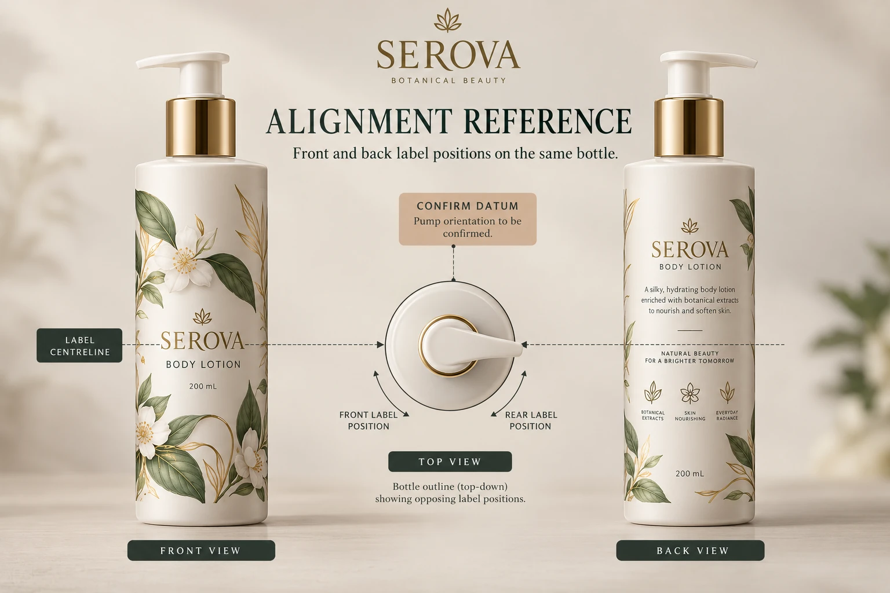

Choose an identifiable front reference
Start with the intended assembled container, closure and relevant filling condition. Decide what front means for this pack. It might follow a distinct molded panel, a bottle feature or an agreed visual reference. Ask the receiving production team which of those references the actual operation can reproduce.
A pump actuator can turn independently on some assemblies. Do not assume its direction is a fixed bottle datum. If its orientation matters to the presentation, have the team responsible for assembly explain when and how that relationship is established.
For an entirely round bottle without a stable front feature, the brand may care primarily about the relationship between the two labels rather than their absolute position around the bottle. That can be a legitimate brief. Name it instead of drawing an arbitrary front arrow that the line cannot use.
Separate three alignment questions
The first is circumferential relationship: where the rear label sits relative to the front. The second is vertical relationship: which top, bottom or center reference is intended to correspond. The third is visual orientation: whether text and graphics remain suitably upright and readable in the agreed views.
These questions should not collapse into a single instruction to center everything. Labels of different heights can share a centerline while having different top edges. A design might deliberately align the tops instead. The brand must identify the intended relationship before the operator can review it.
The bottle-size guide covers usable panels and full-size paper fit. Use that work as an input. Here the added decision is the relationship of two applied pieces on one assembled pack, including which reference the production operation acknowledges.
Compare an appearance mockup with the intended application route
A carefully hand-positioned mockup is useful for explaining the visual objective. It is not automatically evidence that the receiving machine or manual work method will reproduce it. Identify how the mockup was prepared and ask which further applied trial is appropriate.
For machine application, obtain the operator's method-specific review. The roll handoff guide covers delivery arrangement and feed orientation. A pair supplied on separate rolls and an alternating arrangement are not interchangeable simply because the finished design is the same.
For a manual sample run, a supported placement aid or clear work instruction may be the relevant next step. Do not buy a complex machine specification for a task the team actually performs by hand. Equally, do not approve a large machine-filled order from one carefully positioned presentation bottle alone.
Create an applied-pair approval sheet
Use actual photographs or agreed drawings with the following record. Any allowable positioning variation must come from the project parties, not this article.
| Record | Input to provide | What must be settled |
|---|---|---|
| Assembled pack | Bottle and closure IDs, relevant condition | Reference represents the intended pack |
| Front datum | Identifiable feature or stated relative-only objective | Application team can use the reference |
| Pair relationship | Marked front and rear positions | Intended circumferential arrangement |
| Vertical relationship | Top, bottom or center reference | Different label heights are handled deliberately |
| Applied evidence | Identified views and sample preparation method | Appearance objective versus production evidence |
| Operation | Site, method and operator acknowledgement | Supported placement route and open limitations |
| Release | Accepted reference, owner and remaining question | No implied approval beyond the recorded scope |
Begin by confirming the assembled pack. Mark the front datum and the pair relationship, then photograph the proposed layout from the front, rear and a view that makes the relationship understandable. Have brand and operations identify what the example settles and what still needs a representative trial.
If the stated datum changes during bottle sourcing, reopen the affected positioning review. If the line cannot use the proposed feature, hold that aspect pending rather than adding a numerical tolerance that nobody has agreed to meet.

Two packs can justify different levels of control
A hypothetical symmetrical round lotion bottle may need a clear, balanced front-and-back relationship with no fixed direction to the closure. An asymmetrical bottle with a defined presentation panel may require both labels to relate to that feature. Neither brief is inherently better. Each should match how the pack is assembled and used.
Do not change both artwork and application settings at once without recording which question each change addresses. A crooked graphic within a correctly positioned label is a different problem from a correctly printed label applied at an unwanted angle.
For custom cosmetic labels, provide assembled-pack photos, both label sizes, artwork revisions, quantity per pair and the receiving application method. Include the marked datum and unresolved relationship. Use the inquiry form to prepare a message; send the reference photographs and files by email or WhatsApp. The useful release is an applied arrangement both brand and production can identify.